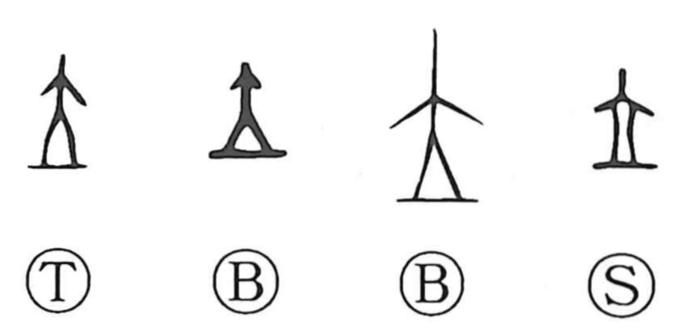

立

Kun: tatsu, tateru | On: ritsu, ryu
to stand ・ to set up ・ to establish ・ position ・ rank
Explanation
立 places 大, a person seen from the front with arms and legs spread, above 一. The line marks the place on which the person stands. The graph means to stand firmly at a definite position.
Taking that position can also mean entering a rank or office, a use shared in early inscriptions with 位. From establishing oneself in place, 立 broadens to setting something up: erecting an object, founding an institution, or establishing an order. 設立 and 創立 retain this movement from standing in a fixed position to giving something a firm beginning.